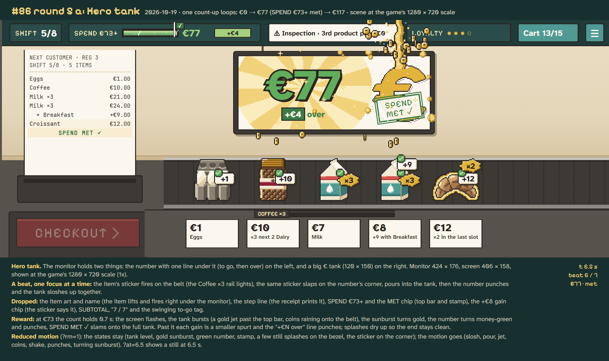
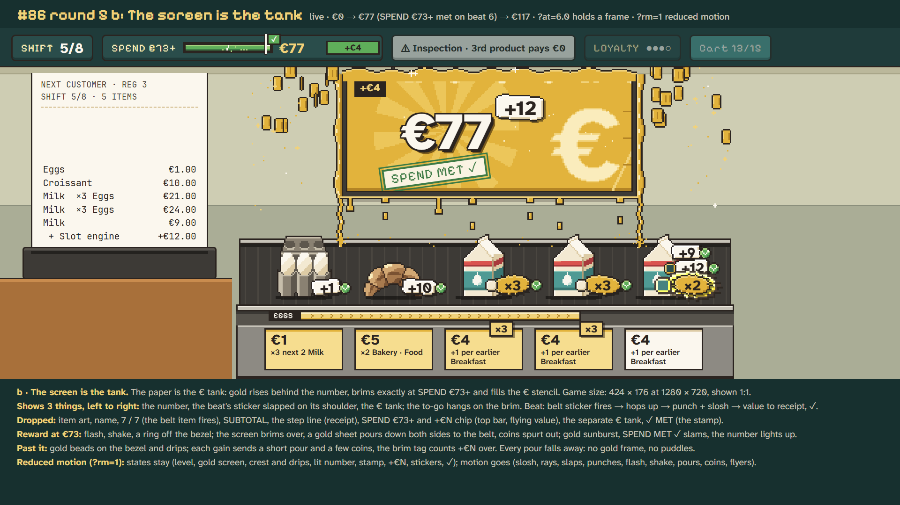
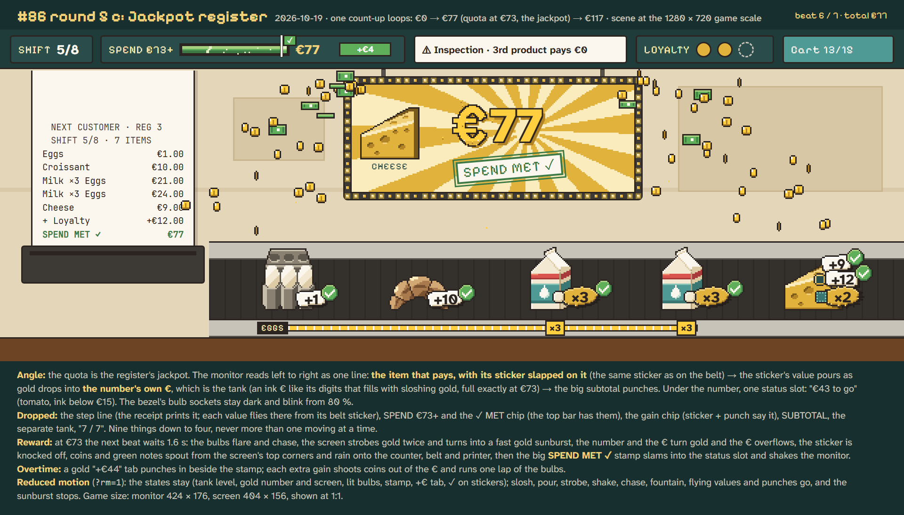

Round 6, your mix: count_up_86_v6_scan.html. A's big € tank, C's number (digits only) with the scanned item, and the conveyor scan: each item rides to the scanner, pays, and drops into the bag.
Your play test of build pass 1: "too much infos, hard to follow", "multiple UI elements not fitting together",
and the € filling "does not reward anything visually". Each page is live (one loop: €0 → €77, SPEND €73+ met on beat 6 →
€117), with the stickers firing on the belt and the green top-bar gauge. Every option cuts the monitor from nine things to
three or four and drops the step line, the SPEND row, the MET chip and SUBTOTAL; the receipt and the top bar carry them.
Add ?rm=1 to a page's URL for reduced motion, ?at=6.5 to hold a frame.

Two things on the monitor: a big number with one line under it ("€62 to go", then "+€44 over") and a big € tank beside it. Each beat's sticker slaps on the number's corner and pours into the tank, then the number and the tank move together. The item art leaves the monitor; the belt item lifts and glows under it instead.
At the quota: a short hold, a flash, the tank bursts in a gold jet past the top bar with coins raining onto the belt, the sunburst turns gold, the number turns money green and punches, and SPEND MET ✓ slams onto the full tank. Each extra gain gives a smaller spurt.
Weak spots: the beat after the quota overlaps the falling coins for a moment; the stamp hides part of the full tank.

The whole screen fills: gold rises behind the number and brims exactly at SPEND €73+. Read left to right: the number, the beat's sticker on its shoulder, and a big € stencil in the liquid. The to-go hangs on the brim.
At the quota: a flash and a shake, the screen brims over the bezel and a gold sheet pours down both sides onto the belt, coins spurt out, SPEND MET slams down and the number lights up. Past it, each gain sends a short pour and a few coins.
Weak spots: once the screen is all gold the € stencil fades to a pale shape; the last beat lands on top of the jackpot's coins for about a second.

The item that pays sits on the left with its sticker slapped on it; gold pours from the sticker into the number's own €, which is the tank. One status line under the number. Bulb sockets line the bezel and blink from 80 %.
At the quota: a jackpot: the bulbs chase, the screen strobes gold and spins a fast sunburst, coins and green notes fountain out and rain onto the counter, the number goes gold and its € overflows, then SPEND MET ✓ slams into the status line. After that a gold "+€44" tab counts what's over and each gain runs one lap of the bulbs.
Weak spots: the coin and note shower crosses the receipt for about half a second; the longest hold (1.6 s) of the three.